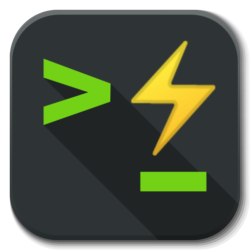

Nift has its own in-built scripting language
Contents
f++ interpreter
In the interpreter mode the prompt will just tell you which language you are using. If you would like the prompt to also display the present working directory (up to using half the width of the console) you can switch to the shell mode using
You can switch to one of the other languages available in Nift's interpreter using
FLASHELL - f++ shell
In the shell mode the prompt will tell you which language you are using and the present working directory (up to using half the width of the console). If you would like the prompt to just display the language you can switch to the interpreter mode using
You can switch to one of the other languages available in Nift using
Running f++ scripts
If you have an
nsm run path/script-name.f nift run path/script-name.f
If the script has a different extension, say
nsm run -f++ path/script-name.ext nift run -f++ path/script-name.ext
Automatic FLASHELL startup
On Unix based platforms (eg. probably all posix compliant Linux distributions, OSX, FreeBSD, Gentoo etc.), you can create an application launcher with
From
#!/usr/bin/env xdg-open [Desktop Entry] Version=1.0 Type=Application Terminal=true Exec=x-terminal-emulator -e nift sh Name=Terminal Comment=flashell shortcut Icon=<path-to-icon>
I often find it easier to just use the properties of the file through the gui to acccess the filesystem for linking to the icon file, typically from the desktop. Below is an icon people might like to use with their short-cut(s):

If you prefer a more native feel without the icon being hijacked, the default icon used for
You can start a session of for example bash shell by simply typing
On Windows one approach is to create a shortcut to
f++ from N++
You can run
@f++(/* single line of f++ code */)
@f++
{
// block of f++ code
}
Nift functions
All of Nift's hard-coded functions (including functions for defining variables, functions and structs) are available in your
funcName{options}(params)